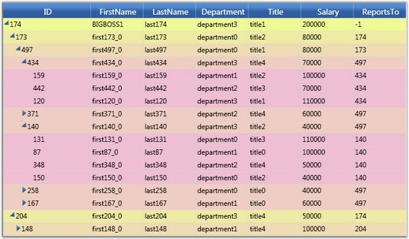
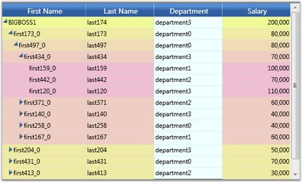
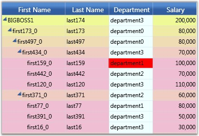

This section elaborates on different style settings.
Visual Styles
The GridTreeControl.VisualStyle property specifies the visual style for the grid tree. This property is also bound through the Grid Tree Template to the SkinStorage.VisualStyle property, so it can participate in the general themed appearance of all Syncfusion Silverlight controls.
Set the SupportVisualStyles property to false to turn off the visual style support in the grid tree control.
Style Object
The GridTreeControl.LevelStyles collection also enables you to specify a GridStyleInfo object and customize the appearance of all the cells at a particular level, in addition to the GridTreeControl.VisualStyle property.
The following code illustrates applying LevelStyles to the grid tree.
|
[C#] Byte k = 150; Byte k1 = 250; int i = -1;
GridStyleInfo style; while (i < 6) { style = new GridStyleInfo(); style.Background = new SolidColorBrush(Color.FromArgb(255, 239, k1, k)); grid.LevelStyles.Add(style); k += 15; k1 -= 15; i++; } |
When the code runs, the following output will display.
 Note: The following screen shot shows the
background color set on a level-by-level basis. The header-cell styles are set
by using the VisualStyle property.
Note: The following screen shot shows the
background color set on a level-by-level basis. The header-cell styles are set
by using the VisualStyle property.

Figure 188: Level Style
Setting Style for the Column
The GridStyleInfo values held in GridTreeColumn.StyleInfo enables you to set the appearance of cells in a particular column.
The following code illustrates setting this property for a column in the grid tree.
|
[C#]
GridTreeColumn tc = new GridTreeColumn("Department", "Department", 100); tc.StyleInfo.Background = new SolidColorBrush(Colors.Cyan); grid.Columns.Add(tc); |
When the code runs, the following output will display.
Note: The following screen shot shows the
StyleInfo property applied to the Department column in the grid tree.

Figure 189: Column Style
Setting Style for a Cell
You can specify the style for a particular cell by handling the QueryCellInfo event on the embedded GridTreeControlImpl, as illustrated by the following code.
|
[C#]
// Subscribe to the event gridTreeControl1.Model.QueryCellInfo += new GridQueryCellInfoEventHandler(Model_QueryCellInfo);
// Event handler void Model_QueryCellInfo(object sender, GridQueryCellInfoEventArgs e) { if (e.Cell.RowIndex > 0) //skip header { // Get the node. GridTreeNode node = gridTreeControl1.InternalGrid.GetNodeAtRowIndex(e.Cell.RowIndex); if (node != null && node.Item != null) { // Cast it to the appropriate type. Employee emp = node.Item as Employee; if (emp != null) { // Pick out the cell by employee and column that you //want to style. For example, here we color the Department of the employee //whose ID is 159. if (emp.ID == 159) { string name = gridTreeControl1.InternalGrid.ColumnIndexToName(e.Cell.ColumnIndex);
if (name == "Department") { e.Style.Background = Brushes.Red; e.Handled = true; } } } } } }
|
When the code runs, the following output will be displayed.
Note: The following screen shot shows the
StyleInfo property applied to a cell in the Department column and row ID 159 in
the grid tree.

Figure 190: Cell Style
Note: Level styles are the lowest in
precedence, followed by column styles, and then followed by cell -specific
styles set in QueryCellInfo.